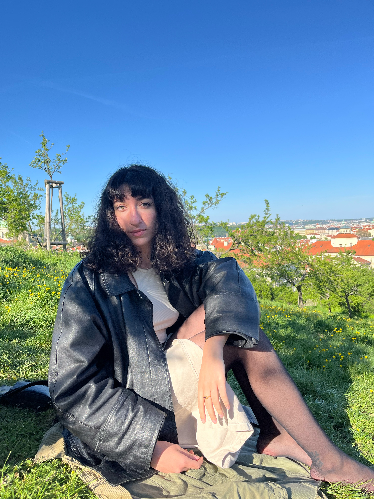
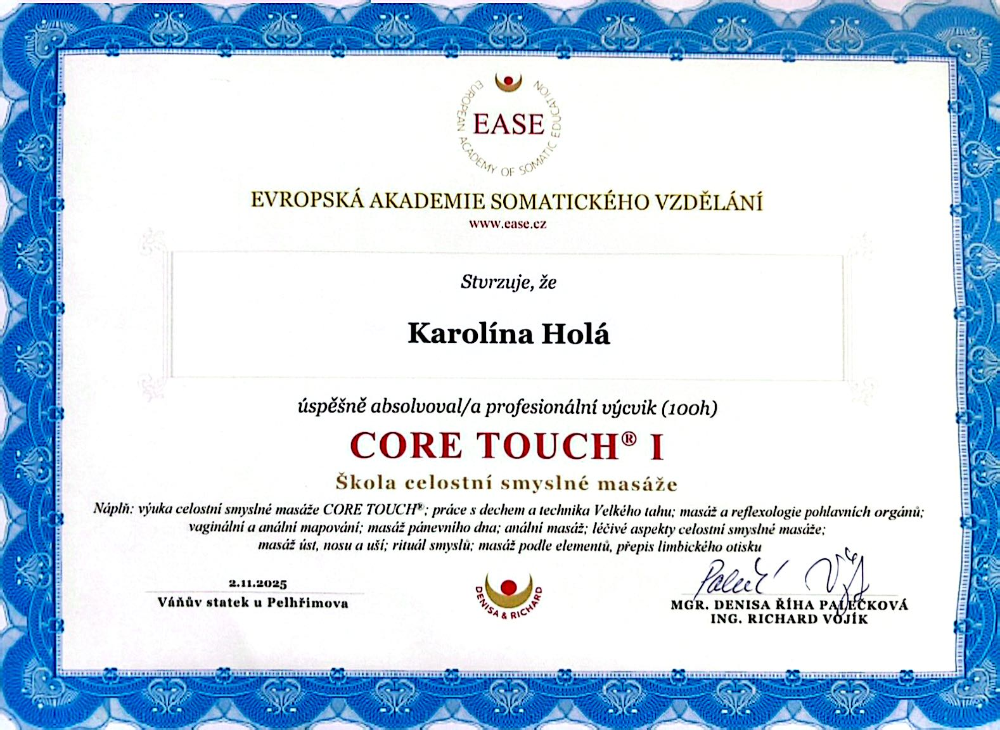
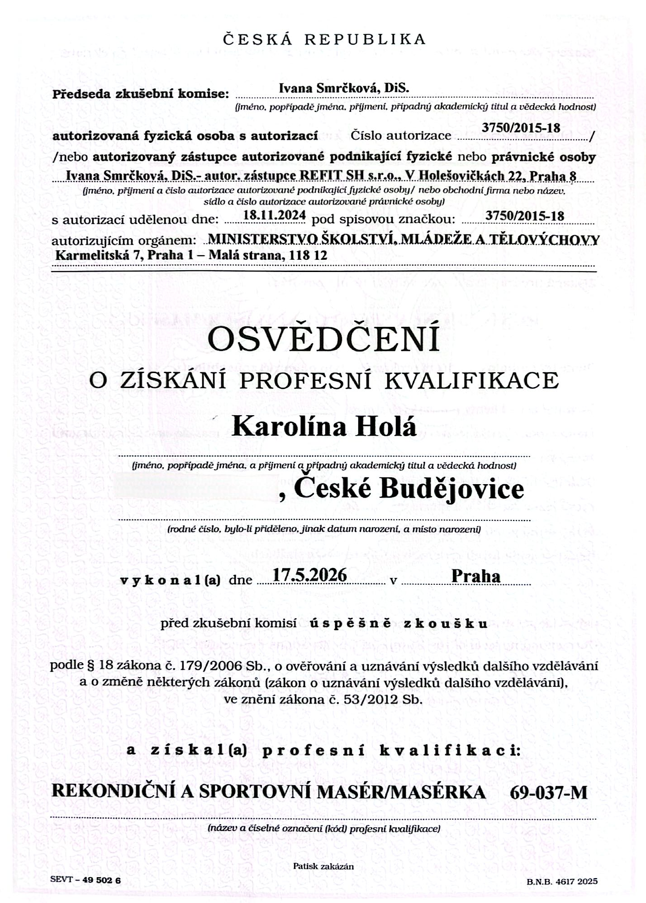

Pojď se mnou prozkoumat svůj vnitřní svět. Tentokrát ne skrze další slova, ale svoje vlastní tělo. Vítám Tě na této cestě.
Zjistit víceIndividuální session zaměřená na somatickou práci s tělem skrze celostní smyslnou masáž.
Pojď oživit své tělo skrze dech, sebeprojev a vědomý dotek.
Naše setkání začíná jemným zpomalením u šálku čaje. V klidu ti vysvětlím, co tě během masáže čeká, jak můžeš aktivně přijímat doteky a společně si nastavíme jasné hranice. Sdělíš mi, s čím přicházíš, a naladíš se na sebe i celý proces.
V mém podání a kontextu masáže je to krátká technika během které se pomocí intuitivního pohybu a dechu naladíš na své tělo. Vytvoříme prostor pro uvolnění a nakonec tě čeká krátká meditace na zavnímání svého lůna.
Naše setkání začíná jemným zpomalením u šálku čaje. V klidu ti vysvětlím, co tě během masáže čeká, jak můžeš aktivně přijímat doteky a společně si nastavíme jasné hranice. Sdělíš mi, s čím přicházíš, a naladíš se na sebe i celý proces.
Rituál, během kterého uvolňuji nejen tělo, ale i duši. Skrze nejrůznější doteky, gesta a imaginaci vyjadřuji muži hluboký respekt a úctu. Jedná se o velmi něžný a pomalý dotyk na všech částech těla, skrze který se postupně přesuneme do samotné masáže.
Upřímně — je to naprosto individuální, a proto ti tu nebudu zaručovat, jak se po masáži budeš cítit. Ale tady je pár recenzí od lidí, kteří u mě na masáži byli.
Když Kája sdílela možnost dojet za ní na masáž, nevěděla jsem do čeho jdu, ale impuls mi řekl jdi do toho, a tak jsem šla. Teda jela jsem přes 4 hodiny do Prahy, ale nelituji. Chtěla jsem se uvolnit více do ženskosti, do prožívání a hlavně do přijímání pozornosti a péče, protože s tím mám problém, hodně dávám a málo přijímám. Kájina přítomnost je velmi příjemná, můžete se uvolnit do projevu, na který při „klasické masáži" úplně není prostor — jako třeba hluboký dech, smích, pláč, takové to příjemné „vrnění" a nemusíte se stydět, že si o vás něco pomyslí divného.
Před samotnou masáží jsme si popovídaly, řekla mi jak bude probíhat a co zhruba čekat. Řekla skvělou věc — když bude cokoliv moc nebo málo, řekni hned, nečekej na nic — což mé úzkostné já uklidnilo a otevřelo mu možnost se ozvat bez výčitky.
Takže Káji, děkuji za to, že jsem se mohla uvolnit, přijmout tvoji péči a dostat se zase blíž ke svému středu. Pod tvýma rukama roztály vrstvy, které mi bránily být sama sebou.
U Káji jsem byla na masáži podobného typu poprvé a nevěděla jsem, co od toho čekat. Když jsem ke Káje přišla, udělala mi čaj a povídaly jsme si o tom, jak bude masáž vypadat, co všechno obnáší a jaké jsou naše hranice. Začala jsem se těšit na to, co mě čeká. Pak jsme tancovaly, meditovaly a nakonec jsem se mohla uvolnit při laskavé a smyslné masáži. Přestala jsem vnímat čas i prostor a jenom jsem se vžila do doteku a svých emocí. Kája má dar vytvořit příjemnou atmosféru a dotekem v těle probudit nejrůznější emoce. Chtěla jsem, aby taková pečující masáž neskončila a po ní mi chvilku trvalo vrátit se zase do reality. Tenhle opravdu celostní prožitek bych přála každému, kdo má problém udělat si čas na odpočinek a péči sám o sebe.
Tuto recenzi píšu jako člověk, který byl na masáži asi dvakrát v životě. Bral jsem to jako relax těla a svalů a nikdy jsem v tom nehledal nic víc. O to víc mě překvapila Kája a její masáž, která je ve dvou slovech „neverbální terapií", kdy tělo je spíš na druhém místě a všechna ta kouzla se dějí v hlavě. Opravdu bych v životě nečekal, že se dá z jakékoliv masáže odejít s pocitem, jak kdyby člověk odcházel z terapie, kde ze sebe dostal úplně všechno. Kája je neuvěřitelně empatická a celým „procesem" člověka provede jak po krásné lesní cestě. Myslím si, že každý by si měl takovou masáž vyzkoušet, aby zjistil, že to opravdu není jen o uvolnění těla a svalů, ale především toho, co si neseme v hlavě.



Téma vztahů a sexuality pro mě bylo velkým a bolavým tématem. Vždycky jsem byla hodně vnímavá a citlivá vůči svému okolí, až jsem se během dětství a dospívání vytvořila takové brnění, abych tak intenzivně neprožívala to, co mě bolelo. Ale společně s tím jsem potlačila téměř veškeré své prožívání. Moc jsem toho necítila fyzicky ani psychicky. A přesto mě lidská sexualita a vztahy extrémně fascinovaly.
Zároveň jsem cítila, že tu přece musí být „něco víc". Neustále jsem s údivem pozorovala, jak prožívají partnerské vztahy a intimitu lidi z mého okolí. A vždycky jsem skončila u toho, že to není nic, po čem bych toužila. A začala jsem to „něco víc" hledat. V knížkách, videích, workshopech, kurzech. Někdy kolem sedmnácti let jsem se poprvé setkala s pojmy jako tantra, vědomé milování nebo napojování se na svou ženskou energii. Ale několik let to všechno byla jen teorie, kterou jsem měla plnou hlavu, ale nevěděla, jak to žít.
Dotek byl pro mě vždy zvláštní kapitolou. V dětství si nepamatuju moc fyzického kontaktu ani láskyplných objetí s rodiči. Na druhou stranu byly v dětství moje intimní hranice výrazně překročeny způsobem, který by se rozhodně neměl dít. Možná proto jsem nevěděla, jak dotek dávat ani jak ho přijímat, a stal se pro mě něčím výjimečným (ani ne tak v tom negativním slova smyslu, že si ho musím zasloužit). Spíš jsem si do určité doby hodně vybírala, komu chci svůj dotyk dát a od koho ho budu přijímat. Bylo to pro mě opravdu hodně zranitelné. Zpětně vím, že jsem se lidí vždy dotýkala celým svým srdcem, jen jsem to dělala nevědomě. Několikrát jsem slyšela, že je můj dotyk jiný než dotyk ostatních lidí a až po letech jsem se dozvěděla, že existuje něco jako vědomý dotek. Já jiný dávat neuměla. A když jsem cítila, že nedokážu dát takový druh doteku — celý, přítomný, srdcem, tak jsem ho nedávala vůbec. Nechtěla jsem nepřítomně sahat na druhé tělo i duši.
Skrze situace, které jsem si prožila, jsem nejdřív dlouho nebyla schopná intimní dotek přijímat. Pak se stal přesný opak — zoufale jsem ho hledala v jakékoliv možné podobě a považovala to za volnost a nějakou sexuální liberálnost. Cítila jsem se úplně vyhladovělá po dotyku a fyzické blízkosti.
A až po těchto všemožných zkušenostech a objevování jsem začala opravdu ŽÍT to, co žiju dnes.
Postupem času jsem zjistila, že k tantře jsem měla blízko dávno předtím, než jsem věděla, co tantra je. Vždycky jsem věřila v „něco". Pak jsem začala říkat, že věřím ve vesmír, ale nikdy jsem to nenazývala Bůh. A vlastně je asi jedno, jestli tomu říkám Bůh nebo vesmír — jde o to, že věřím v něco, co nás přesahuje. A zároveň jsem to celé i já. A právě v tomhle, ale spoustě dalších věcí mi tantra pomohla pochopit a dala mi jazyk pro něco, co jsem cítila, ale neuměla to pojmenovat. Přestala jsem mít pocit, že žiju ve svém vlastním vesmíru úplně sama.
Věřím, že naše tělo mnohdy uchovává příběhy, které naše mysl dávno zapomněla a mohou nám bránit v plném prožívání naší sexuality a otevřít se intimitě. Skrze dotyk a somatickou práci s tělem otevíráme prostor pro uvolnění a plný prožitek ve tvém těle. Propojuji práci s fyzickým tělem společně s jemnou energetickou prací, která vychází z východní filosofie. A proto slovo celostní neodkazuje pouze na fyzické tělo, ale na vnímání člověka jako celku.
Prostor, kde jsi přijímán/a ve své plné autenticitě.
Prostor, kde můžeš odložit všechny masky.
Prostor, kde tě nikdo nehodnotí.
V tantře jsou ruce považovány za prodloužení srdce a z něj taky tento láskyplný druh doteku vychází — a proto umožňuje dotknout se i toho tvého.
Vycházím z principu moderní neo tantry a certifikované metody Core Touch. Výše ses dozvěděl/a, jak sezení přibližně probíhá, ale ráda bych zmínila pár základních rozdílů mezi klasickou sportovní, tantrickou a mojí masáží.
Součástí této masáže je často práce s tělem v jeho přirozenosti, tedy bez oblečení. Postupná nahota v průběhu masáže u obou stran umožňuje hlubší uvolnění a důvěru — zkrátka otvírá prostor pro to, být takový jací opravdu jsme a jak nás příroda stvořila. Zároveň to ale není povinnost, vždy respektuji tvé hranice, komfort a pocit bezpečí... to je na prvním místě.
Vedu tě do aktivního přijímání, kdy je vítaný jakýkoli somatický projev — od hlubokého dechu po pláč, smích nebo křik.
Celostní smyslná masáž může být velice podobná tantrické masáži, kterou možná znáš, ale součástí této masáže není masáž intimních partií. Rozhodla jsem se tuto část vynechat, protože chci, aby sezení se mnou bylo bez očekávání nějakého pomyslného finále nebo konce.
Mým cílem je zprostředkovat zážitek, který dokáže probudit citlivost v každé části tvého těla. Je to moment, kdy si můžeš dovolit cítit živost a radost skrze dotyk a vědomou pozornost zaměřenou pouze na sebe a to, co právě ve svém těle cítíš.
Sportovní masáž asi všichni známe a většina ji někdy zažila. Standardně ulevuje od fyzické bolesti a slouží k uvolnění svalů. Soustředí se primárně na to fyzické tělo, i když celý tenhle proces může být velice relaxační a uklidňující.
Tantra je duchovní filozofie, která se zabývá mnohem širším spektrem než jsou masáže — například prací s mantrami, jógou, rituály, meditací. Práce se sexualitou v této formě je pouze jedna určitá část, kterou jsme si tady na západě převzali. Název tantra masáže se u nás používá jako obecně známý termín pro tento druh masáže a práce s energií, ale jedná se spíše o modernější neo tantru. Proto se nepovažuji úplně za tantrickou masérku, protože na tantru pohlížím z mnohem širší perspektivy než jsou masáže. Součástí tantra masáží jsou často intimní masáže (yoni, lingam nebo anální masáže), které jsem se rozhodla nezařazovat do mých sessions. Bohužel se pojem tantra masáže začal používat i v kontextu erotických a sexuálních masáží... Při správném provedení se hodně ve zkratce jedná o masáž zaměřenou na probuzení sexuální energie (naší životní energie) a jejího vědomého prožívání, práci s dechem, vědomým dotykem a plnou přítomností.
Napiš mi na můj Instagram @roots_of_touch, kde ti ráda odpovím na otázky, které by tě ohledně našeho setkání zajímaly. Také tam najdeš spoustu obsahu a nejrůznějších videí, která ti můžou pomoci víc nacítit moji energii a to, jestli by ti byla moje přítomnost příjemná. Případně můžeš využít email masaze.rootsoftouch@gmail.com.
Pro rezervaci svého termínu mi napiš
na e-mailovou adresu masaze.rootsoftouch@gmail.com
nebo na Instagram @roots_of_touch.
Do zprávy nezapomeň přiložit své telefonní číslo a já se ti brzy ozvu s nejbližšími volnými termíny.
Rezervační poplatek činí 1 000 Kč, který se následně započítává do celkové ceny masáže. Zbývající částku doplatíš na místě.
Zrušení rezervace více než 72 hodin předem — vracím 100 % rezervačního poplatku (1 000 Kč).
Zrušení rezervace méně než 72 hodin předem — účtuji 50 % z ceny rezervačního poplatku, tedy 500 Kč.
Zrušení rezervace méně než 48 hodin předem — účtuji 100 % z ceny rezervačního poplatku, tedy 1 000 Kč.
(Jedná se pouze o částku za pronájem prostoru, kde jsou smluveny tyto storno podmínky. Děkuji za pochopení.)